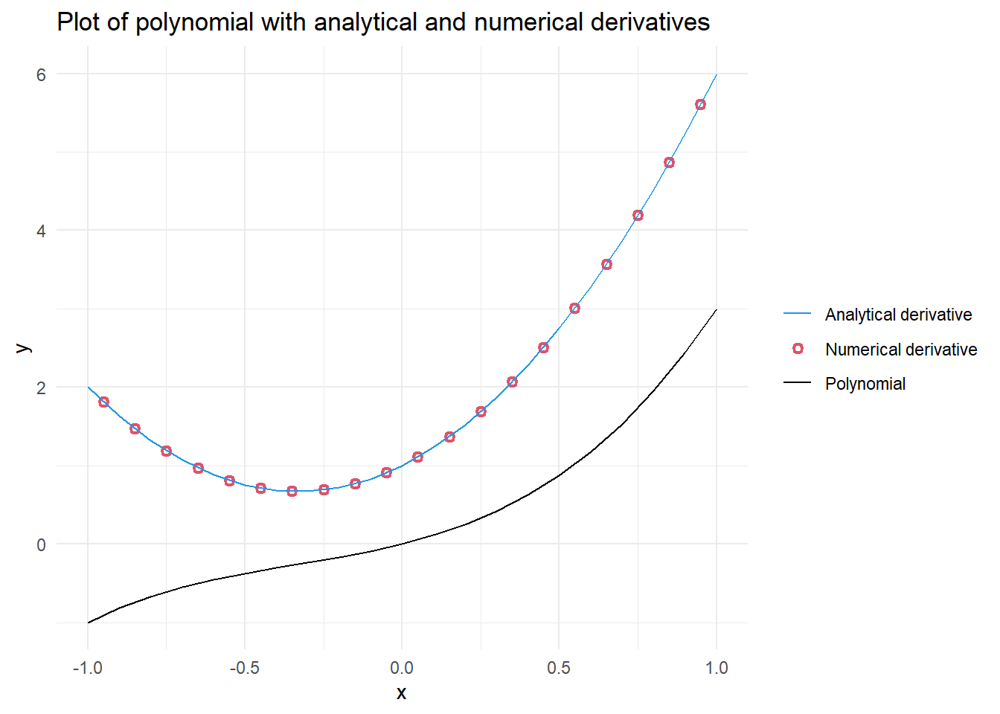
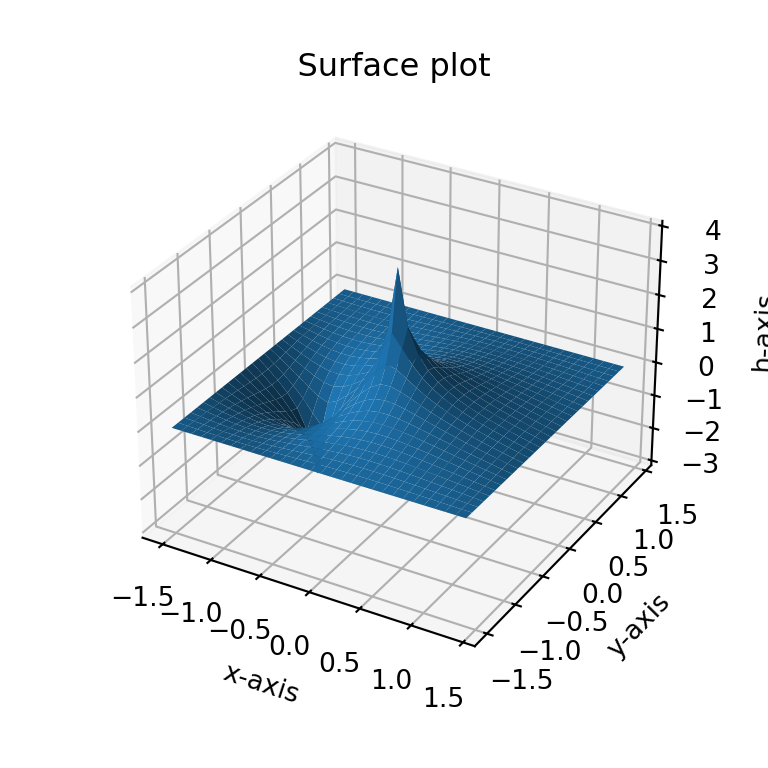
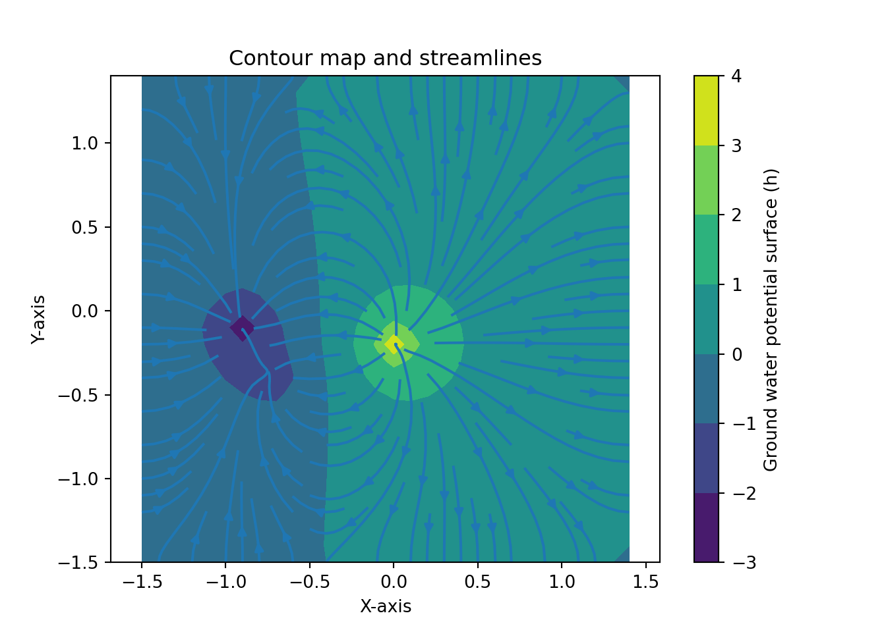

# Check if libraries are installed; install if not.
if (!require("pacman")) install.packages("pacman")
pacman::p_load(ggplot2, tidyr, dplyr)1 Assignment 1 – Calculus Review
EVR-5086 Fall 2025
Assignment 1 - Calculus Review
1.1 Plot the polynomial
Below are the steps I took to complete the first part of EVR-5086 Assignment 1.
In doing this exercise in R, I started by loading the R libraries I will use in this chapter. I used {ggplot2} for plotting, and {tidyr} and {dplyr} for data wrangling.
Next, I defined the variables and created the vectors I will need for the plot.
# Define variables
a <- 1
n <- 1
b <- 1
p <- 2
c <- 1
q <- 3
# Create x vector from -1 to 1
x <- seq(from = -1, to = 1, by = 0.1)
# Calculate a value of y for each value of x
y <- (a * (x^n)) + (b * (x^p)) + (c * (x^q))
# Calculate the analytical derivatives for each value of x
dy_dx <- (a * n * (x^(n - 1))) + (b * p * (x^(p - 1))) + (c * q * (x^(q - 1)))
# Calculate the numerical derivatives between each value of x
deltay <- diff(y)
deltax <- diff(x)
deltay_deltax <- deltay / deltax
# For plotting purposes, derive the midpoint across the original values of x
deltax_vec <- x[-length(x)] + deltax / 2My next goal was to unite all of the vectors into a long data format. I did this by creating a data frame, then pivoting the data to only have the values that will be plotted on the x and y axis, as well as a label. Later, I will use my “linetype” label to define line types as well as the colors and shapes in my plot.
# Build data frames and rename variables for plot
plot_prep <- data.frame(x, y, dy_dx) |>
dplyr::rename(Polynomial = y, "Analytical derivative" = dy_dx)
# Wrangle to long data format and bind in numerical derivative
plot_tidy <- plot_prep |>
tidyr::pivot_longer(!x, names_to = "linetype", values_to = "y") |>
dplyr::bind_rows(data.frame(x = deltax_vec, y = deltay_deltax,
linetype = "Numerical derivative"))Lastly, I create the plot and reflect on the observations and limitations of the numerical derivative.
Figure 1.1 shows that the numerical derivative, shown as red open circles, is very similar to the analytical derivative, shown as a blue solid line. The good match we see relates to the scale over which we calculated the numerical derivative compared to the scale of the rate of change in the polynomial. When calculating the numerical derivative, we can get the average rate of change between two points.
Note that for the analytical derivative we are only providing the plot with information associated with x values ranging -1 to 1, in steps of 0.1. Meanwhile, the numerical derivative is plotted at the midpoints of our original segments, with x values ranging from -0.95 to 0.95. Including the numerical derivatives in the appropriate position relative to the curved lines plotted between our analytical derivatives results in the overlay of the points and the line.
If the numerical derivative had a significantly lower resolution (e.g. just -1 and 1), it would not match well, and would be just one point, at x = 0, above the “U” shaped line representing the analytical derivative. Although such a wide spacing is extreme to consider, it helps to emphasize that grid spacing and location plotted are important considerations when working with numerical derivatives.
# Plot the analytically derivative as a solid line
# and the numerical derivative as open symbols
polynomial_plot <- ggplot(data = plot_tidy,
aes(x = x, y = y, color = linetype)) +
geom_point(
data = dplyr::filter(plot_tidy, linetype == "Numerical derivative"),
shape = 21, stroke = 1.25
) +
geom_line(
data = dplyr::filter(plot_tidy, linetype != "Numerical derivative")
) +
theme(legend.title = element_blank()) +
scale_color_manual(values = c(4, 2, 1)) +
theme_minimal() +
theme(legend.title = element_blank()) +
labs(
title = "Plot of polynomial with analytical and numerical derivatives"
)
polynomial_plot

1.2 Solve the 2-D Laplace in Excel
I created a 28 by 28 grid of the 2-D Laplace Equation. I included three internal “boundary values”; one high value of 4 and two low values of -2 and -3. The two low values were near each other compared to their respective distances to the high value. I allowed excel to iteratively calculate for 10,000 iterations with a minimum change of 0.0001. I saved the file as a CSV file after including explicit zeros surrounding the formulas. The dimensions of my data were 30 by 30. I rounded to four significant digits to see if stagnation areas would be more evident by avoiding calculating of extremely small differences.
1.2.1 Read in and plot contours using Python
Start by turning on Python in R. This requires the package {reticulate} in R which embeds a Python session within the R session. The function py_require() is also used to declare Python packages that will be used in the R session.
# Check if libraries are installed; install if not.
if (!require("reticulate")) install.packages("reticulate")Loading required package: reticulate# Load reticulate
library(reticulate)
# Ensures matplotlib package is available in the current session
if (!py_module_available("matplotlib")) py_require(c("matplotlib"))The rest of the assignment is run in Python. First, I import the numpy and matplotlib.pyplot packages and read in the CSV file that I had created in excel. To prepare the data for plotting, I create two arrays using np.linspace() and combine them into a 30 x 30 grid of x and y coordinates using np.meshgrid(). Finally, the partial derivatives for h with respect to x and y are calculated using np.gradient().
# Import packages
import numpy as np
import matplotlib.pyplot as plt
# Load csv file from excel
h = np.loadtxt('tripole.csv',delimiter=',')
# Create a grid of x and y coordinates
x_vec = np.linspace(-1.5, 1.4, 30)
y_vec = np.linspace(-1.5, 1.4, 30)
X, Y = np.meshgrid(x_vec, y_vec)
# Calculate gradient/partial derivatives
[dhdy, dhdx] = np.gradient(h, y_vec, x_vec)
# Round to 4 significant figures
dhdy4 = np.round(dhdy, 4)
dhdx4 = np.round(dhdx, 4)Figure 1.2 recreates the surface plot that perviously had been explored in Excel. The x- and y-axis range from -1.5 to 1.4, while the h-axis ranges from -3 to 4. Figure 1.3 shows a contour map with flow vectors. Finally, Figure 1.4 provides a similar plot to Figure 1.3, but with streamlines instead of arrows.
Reviewing the contours, flow vectors, and streamlines I did not identify stagnation points. When I selected the two low points, I was expecting a stagnation “saddle effect”. However, the proximity and the similarity in values I used did not result in a stagnation area. Interestingly, the majority of the surface plotted consisted of extensive areas of very low gradients. Figure 1.4 shows that the streams would run beyond the edges across approximately 60% of the plotted grid.
The following three Python code chunks created Figure 1.2, Figure 1.3 and Figure 1.4, respectively.
1.2.2 Surface plot
fig = plt.figure(figsize = [4, 4], dpi = 300) #Create empty figure
ax = plt.axes(projection = '3d') # Create plot region
ax.set_title(" " * 20 + 'Surface plot'+ " " * 20) # Include plot title and pad space for h-axis label
ax.set_xlabel('x-axis') # Include x-axis label
ax.set_ylabel('y-axis') # Include y-axis label
ax.set_zlabel('h-axis', rotation = 90) # Include vertical h-axis label
surf = ax.plot_surface(X,Y,h) # Plot surface
plt.show() # Render plot

plt.close('all') # Prevent accidental overplotting onto an old figure1.2.3 Plot contour map and flow vectors
# Plot contour map and flow vectors
plt.contourf(X, Y, h) # Draw contours for h on grid coordinates (x,Y)
cbar = plt.colorbar() # Add colorbar
cbar.set_label('Ground water potential surface (h)') # Include lable on colorbar
plt.axis('equal'); # Force equal scaling on x and y(np.float64(-1.5), np.float64(1.4), np.float64(-1.5), np.float64(1.4))plt.title('Contour map and flow vectors') # Include plot title
plt.xlabel('X-axis') # Include x-axis label
plt.ylabel('Y-axis') # Include y-axis label
qplt = plt.quiver(X, Y, -dhdx4, -dhdy4, scale = 360) # Draw vector arrows; note: large scales values make smaller arrows
plt.show() # Render plot
plt.close('all') # Prevent accidental overplotting onto an old figure1.3 Plot streamlines instead of arrows in Section 1.2.3
# Plot contour map streamlines
plt.contourf(X, Y, h) # Draw contours for h on grid coordinates (x,Y)
cbar = plt.colorbar() # Add colorbar
cbar.set_label('Ground water potential surface (h)') # Include lable on colorbar
plt.axis('equal'); # Force equal scaling on x and y(np.float64(-1.5), np.float64(1.4), np.float64(-1.5), np.float64(1.4))plt.title('Contour map and streamlines') # Include plot title
plt.xlabel('X-axis') # Include x-axis label
plt.ylabel('Y-axis') # Include y-axis label
plt.streamplot(X, Y, -dhdx4, -dhdy4) # Draw streamlines<matplotlib.streamplot.StreamplotSet object at 0x0000022C2B95BC90>plt.show() # Render plot

plt.close('all') # Prevent accidental overplotting onto an old figure